Def: Policy Evaluation is computing the value of all states given a particular policy
Recall from Lecture 2: Model-Based Dynamic Programming Iterative Method for Policy Evaluation
For
In Dynamic Programming, we use
Cons:
Def: Episode: A complete sample of a policy on the MDP until termination.
Def: Below, let
Simulate the policy many times and average rewards recieved. Several variants exist (Appendix 2).
This is performed once per episode. The value of every state is updated once the episode is completely sampled through.
The most common variant for the update used is incremental every-visit MC, which performs the incremental update
(Note: We can apply the same Monte Carlo update, but to learn the state-action value function (aka Q function) instaed of the V function. In this case the update is
Pros: Does not assume state is Markov.
Cons:
This is the most popular method of the three. It is a combination of Monte Carlo and Dynamic Programming Methods. We sample episodes, but instead of updating at the termination of each episode, for every time step
Pros: Updates are applied much faster, after every action instaed of every episode, so generally much lower variance than Monte-Carlo Methods. Since we also bootstrap, TD can be used in episodic or infinite-horizon cases.
However, TD updates can take a bit longer to propagate than Monte Carlo, because you only update your reward for the state that you’re currently in. You don’t backpropagate the reward information to states that you previously visited, which happens in Monte Carlo.
(Note: We can apply the same TD update, but to learn the state-action value function (aka Q function) instaed of the V function. In this case we need to observe
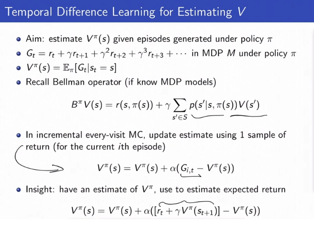
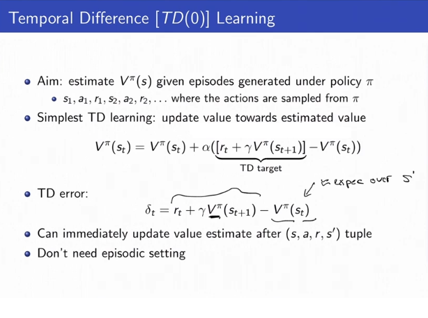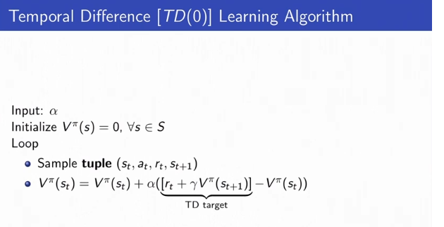
TD[0] is bootstrapping after the first reward, TD[1] is boostrapping after the second reward, etc.
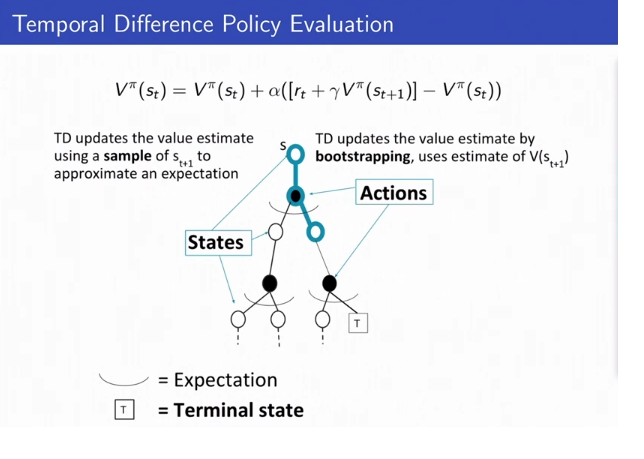
Summary of the Three Methods:
(See Appendix 3 for a case where MC/TD give different results)
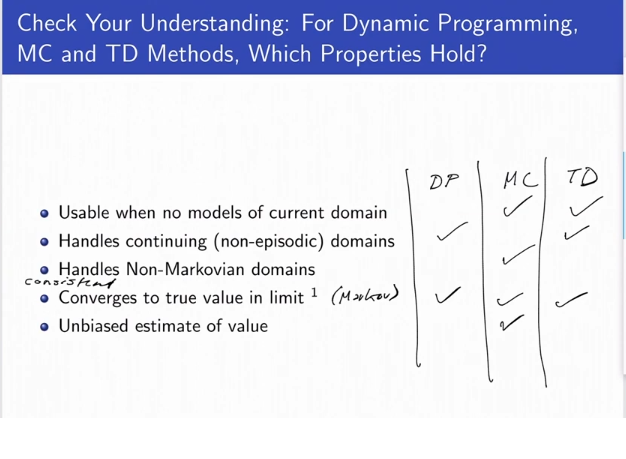
Rationale: DP and TD use bootstrapping. This handles onn-episodic domains, but is a biased estimate of value and requires the Markov Assumption.
DP is model-based learning (needs transition model), whereas MC/TD is model-free and requires no models. All three have convergence guarentees.
Tradeoffs:
If the world is not Markovian, you don’t want to make the Markov assumption and get wrong results, so Monte Carlo is better.
If the world is Markov, TD is a lot faster.
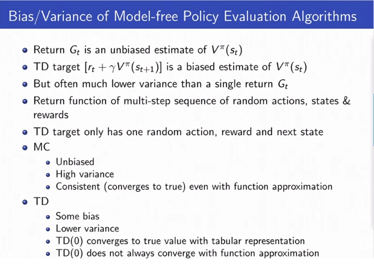
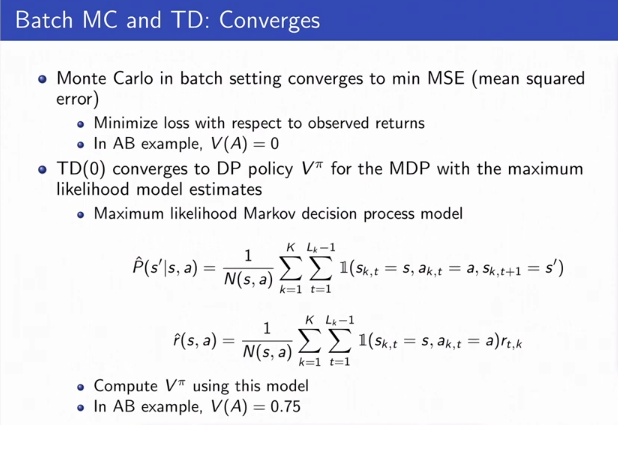
(TD[0] converges to DP policy V^\pi for the MDP with the maximum likelihood estimates for teh dynamics and the reward model)
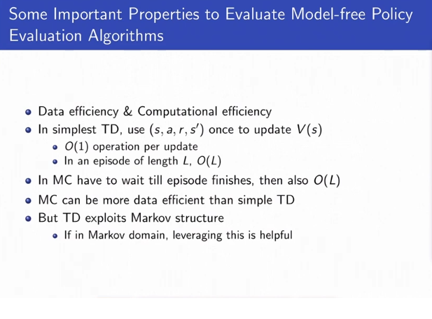
Appendix 1: Policy Evaluation - Dynamic Programming
Note that in the Dynamic Programming method we are bootstrapping the future expected rewards by using V\_{k-1}^\\pi as a stand-in for the sum of future rewards. In policy evaluation, this is precise (not an estimate) because we are in the model-based case, but in the model-free case generally using this substitution would be a biased estimate.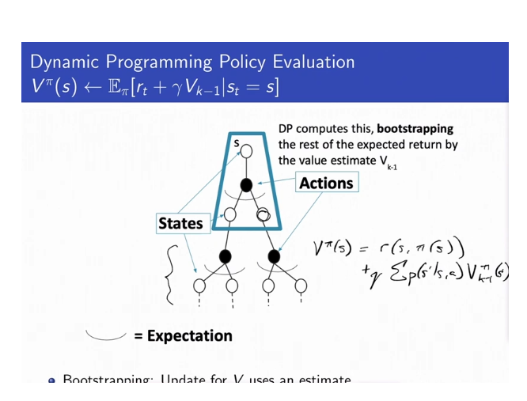
**
**
Appendix 2: Variants of Monte Carlo Policy Evaluation
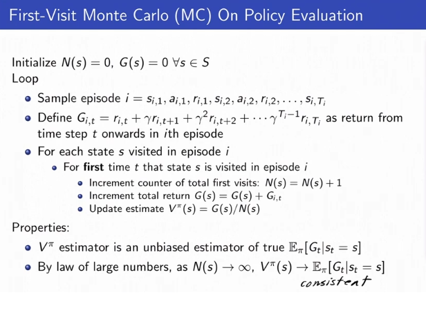
No bias becuase the state information you use is iid.
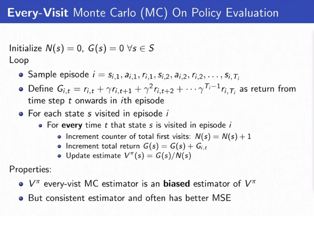
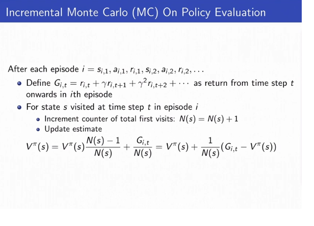
(Equivalent Formulation to Every-visit Monte Carlo)
If you go to a state multiple times in every episode, your returns are correlated so it’s no longer iid. But its still consistent and has a lot lower variance.
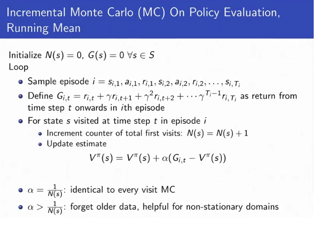
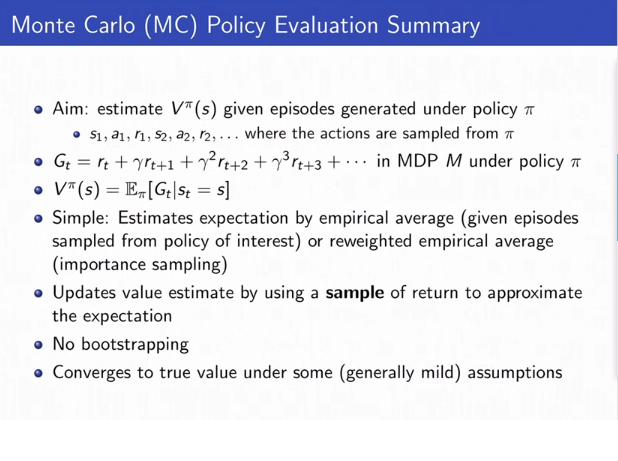
Appendix 3: Different between the three methods for model-free policy evaluation:
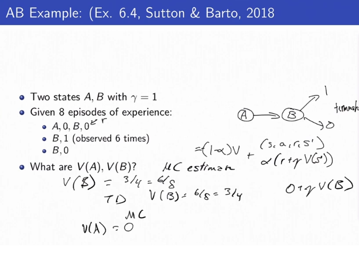
The above supposes the online case- being able to sample the above observations many many times, and perfomring updates each time.
V(A) = 0 in ML estimation, but V(B) = 3/4 in TD estimation.
Appendix 4: Stats Recap
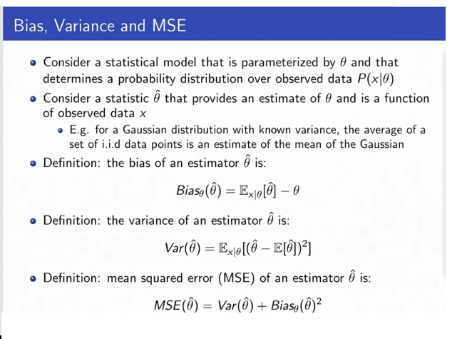
Mean Squred Error is Bias^2 + Variance